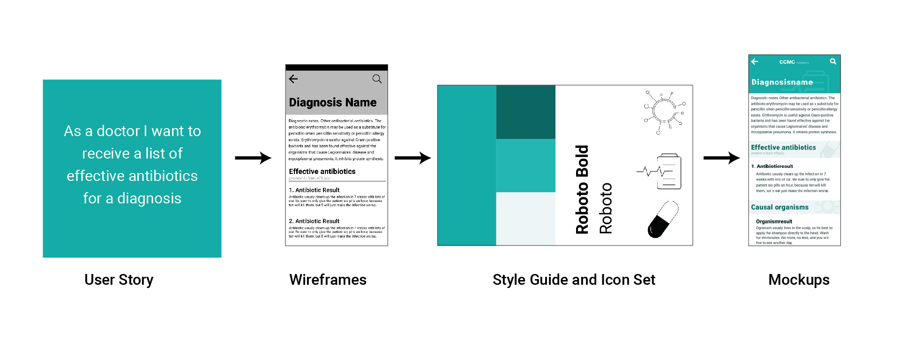
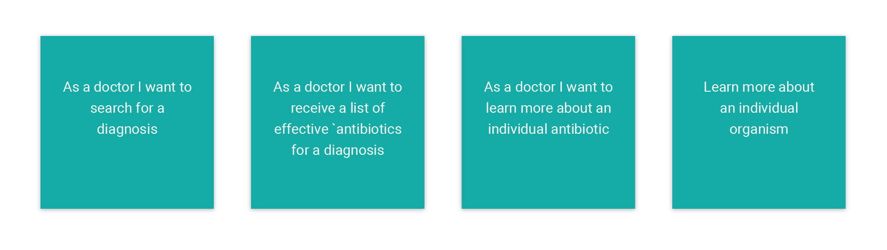
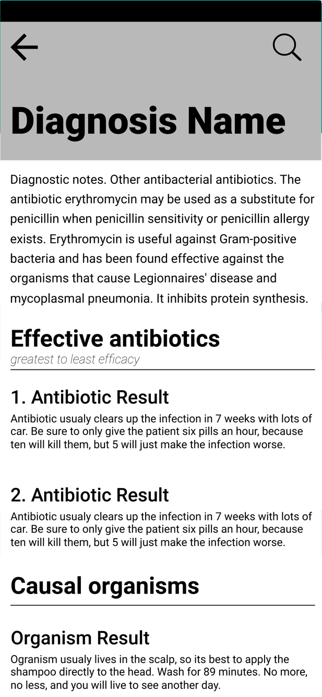
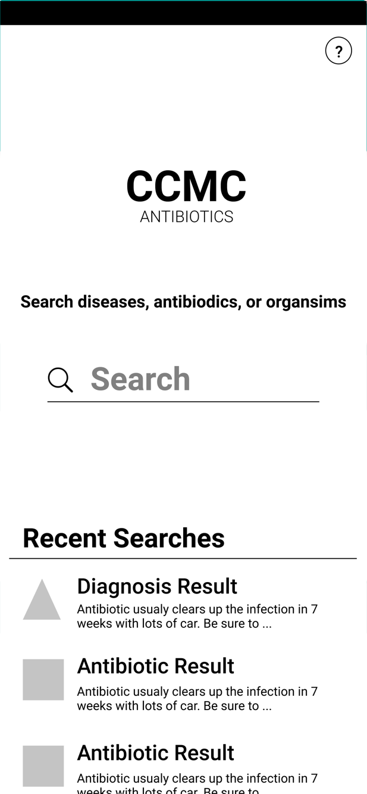
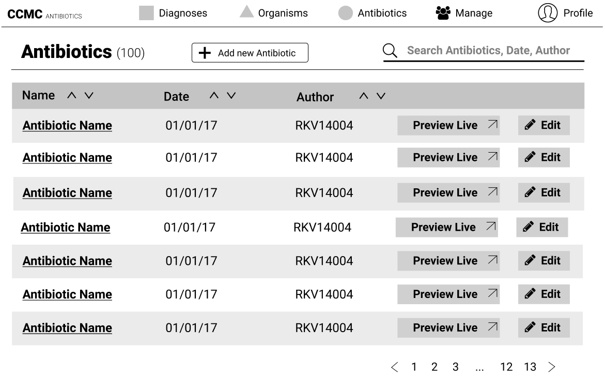
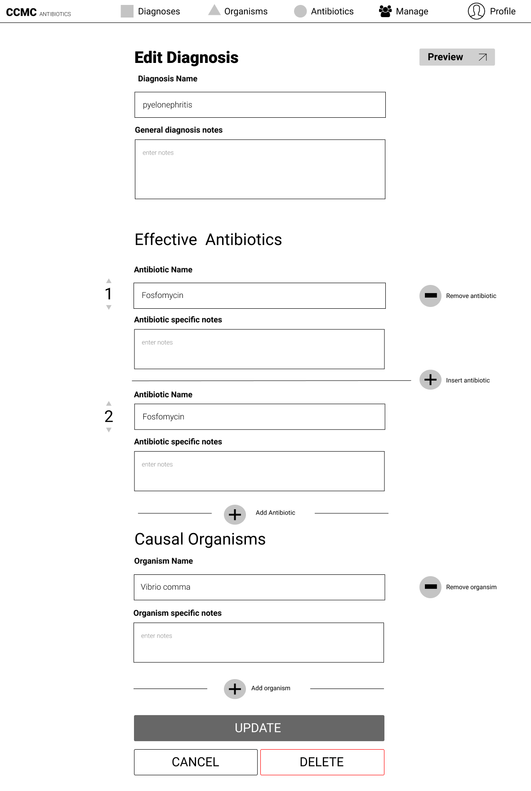
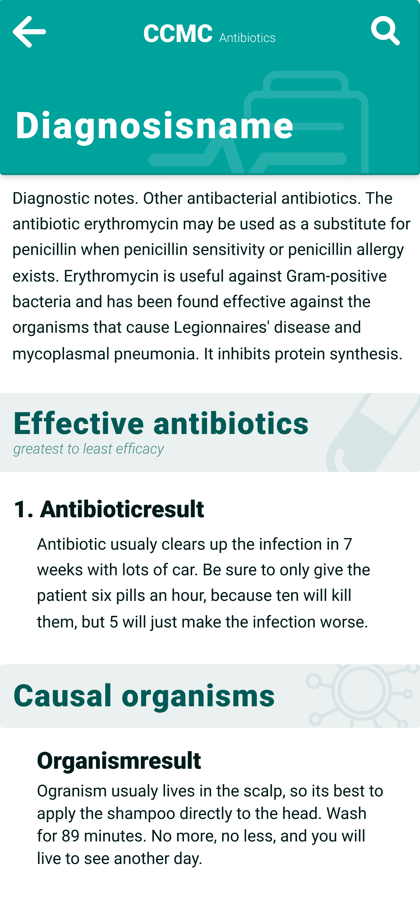
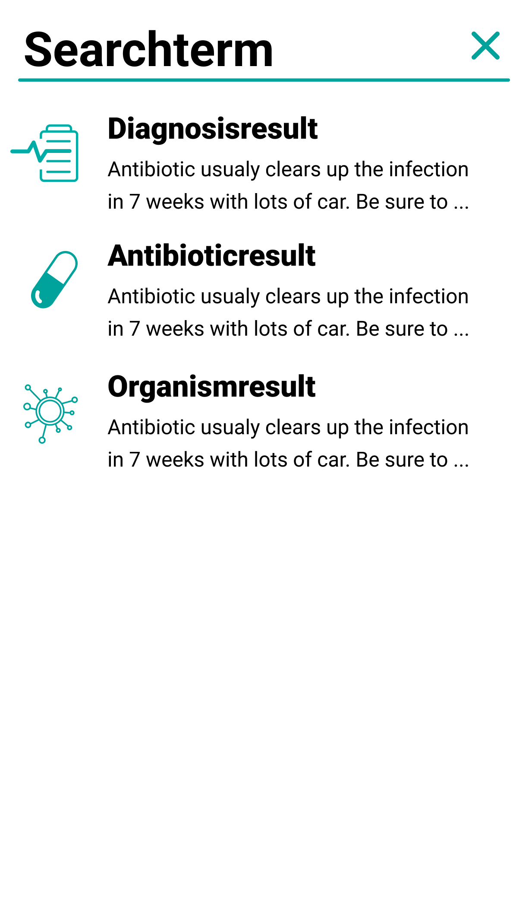
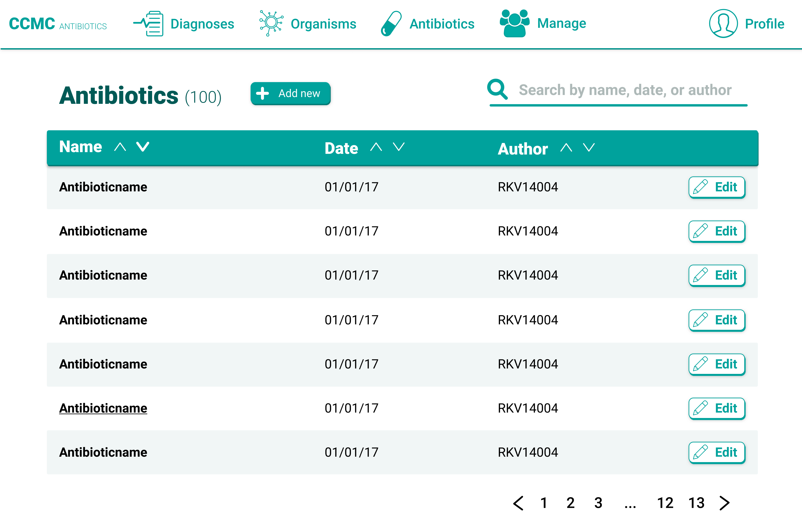
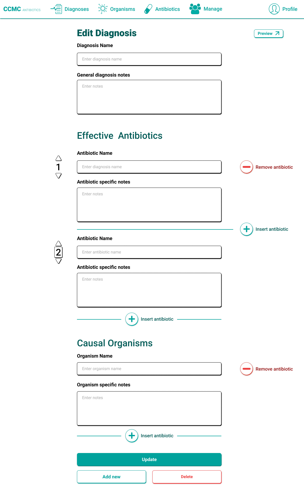

Antibiotics App
Background
The project was a collaboration with doctors at Connecticut Children's Medical Center (CCMC). The inspiration for the app came when doctors at CCMC traveled to third world countries. They found that medical facilities could use a better solution to choosing the right antibiotic for a disease.
I worked with another designer to create wireframes, an icon set, a color palette, and final mockups
for the developer team.
How might we help doctors prescribe the right antibiotic?
Research
Stakeholder Interviews
Key Insights
- The key user base will be doctors, with medical training to diagnose patients:
- Medical facilities may not have the recommended antibiotic on hand, but substitute medication might be available:
- Doctors are likely to have a mobile device:
- Wi-fi may not be reliable, so we have to reduce load time:
- Medical Information on the app has to be updated by a medical professional:
Personas
Two Part Solution
Part 1: Mobile App for Doctors
Part 2: Web Content Management System
Process

User Stories
These are some of the requirements for the Antibiotics application. The goal of the project of the project was to provide doctors a way to provide better a diagnosis and medication

Wireframes
Technical Challenges
Mobile App for Doctors

Diagnosis Information
When a doctor finds the diagnosis that they are looking for, they are given a list of antibiotics that could be used to treat the disease as well as the organisms that might be repsonsible.
CMS for Admins



User Flow
Styles and Icons
UI choices
Icons to navigate app
Solution




Mobile App: Search for Diagnosis
Mobile App: Find Recommended Medication & Causal Organism
CMS: Dashboard
CMS: Adding New Content
Conclusion
Project on hold
Next Steps
- User Testing:
- Passing Documents to Developers:
Lessons
- Work with other designers and developers:
- Understanding technical limitions: